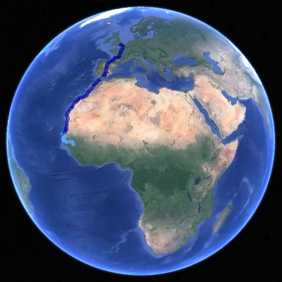
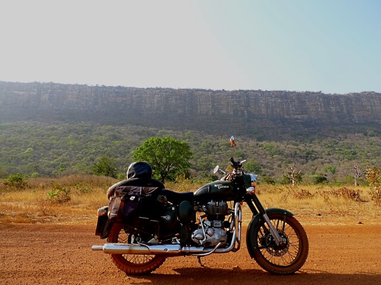
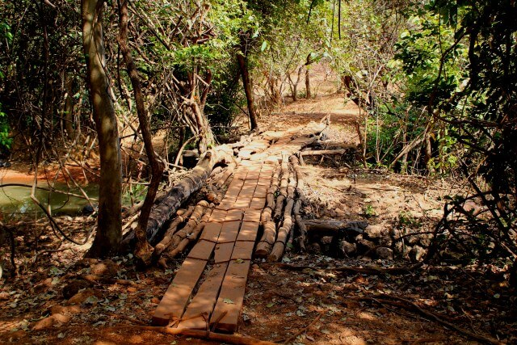
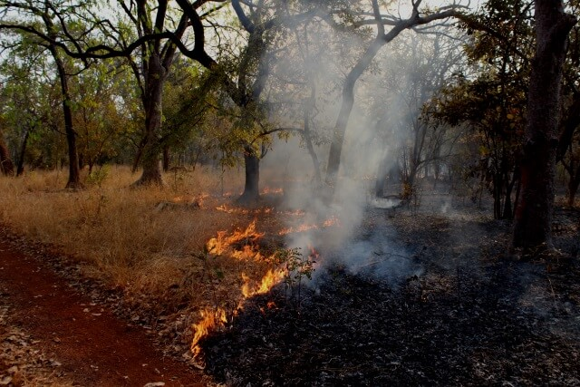
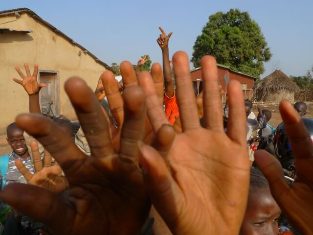
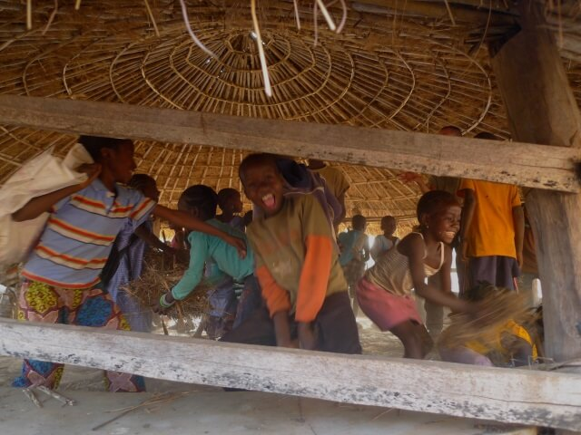

Guinea, AFRICA
Chasing Mali (10 minute read)
New day.
New country. New language. New currency.
There's no cash machines out here, so Jon and I exchange some of our West African CFA over into Guinean Francs.
We trade only as much as we think we'll need, as there are other countries to come that should use the CFA as well.
We only need enough to get us through to lunchtime tomorrow, when we'll be in Labe.
Language: Back to French.
Charades and Portuguese in Guinea-Bissau was starting to wear a little thin...
All to the good.
On the way out of the village Jon says that that he wouldn’t mind checking out Mali on the way to Labe.
"Really? Mali?? I don't think we can go to Mali mate, do you have a visa? Shit, it must be a day's ride at least..."
"Nah, not the country, it's a village, not far. We can check it out on the way to Labe."
"Oh, alright. Shit. I thought you meant the country! Why are all the names around here the same?" I look down at my GPS "How far is it?"
"About eighty clicks"
"Yeah. No worries. You got it on the map?"
"Yeah, the village is marked, but there's no road on the map connecting here to there"
"Sooooo..."
"They were telling me this morning where the turn-off is."
"Mmmm... Oright then, you've got point."
We take the turn off onto an orange dirt road.
It gets a bit rough. And things get slow.
By the end of the morning the track deadends at a village that's not called Mali.
I check the GPS.
We're not even half way to Mali.
Let alone Labe...
The “distance made good” is reading two fifths of fuck all. Looking at our track, it looks like we've taken the path of a tortured river...
We have lunch in the village, and get pointed out the way to Mali.
We have to bush bash.
Overgrown goat tracks going in all directions.
The path keeps branching and then branching, over again and then again. It's impossible to know which way is the right way to go; we just keep on the line closest to “as the crow flies”.
I'm going as fast as I dare to keep speed with Jon.
I lose him in the brush anyway... Then get a glimpse of him again as I round the corner...
I don't make the next corner to see which branch he's taken....
I guess the path. Then I guess again. And again...
Lost...
I've lost him.
I freak out.
I pin the throttle.
So far off the grid, it’s obvious that this ride is more than I can chew.
And now I’m on my own.
Fuck.
I'm going way, way faster than I have any right to on an Enfield in this shit and with my skill level. I just need to get a glimpse of that KTM again...
Panic.
I’m on the cusp of throwing in the towel and retracing my steps. I'm no chance at guessing so many right...
A flash of colour through trees...
I chase him down. Flying.
I pull him over, and tear shreds off him in a freak-out-fuelled rant.
He doesn’t think it’s a big deal, but agrees to keep me in his mirrors from here on out, or let me lead the way at my snails pace.
I know that I’m cramping his style.
But I don’t give a fuck; I’m way out of my league here and my mind is boggled at the prospect of being stranded solo.
We agree that this path is fucked; it can't be the one to Mali.
We've been given a bum steer.
We head back to the village for a clarification.
True to form, half the mob points us one way, the other half points us the other way.
I’ve got serious misgivings about this; I’m usually happy winging it, but this is a whole other level of uncertainty. Plus, the day’s half gone, we won’t get anywhere near Labe at this rate.
I’m happy to cut losses; head back to Koundara, start again to Labe, tomorrow, on the main road.
Jon is still enthusiastic about Mali...
Fuck it.
Alright.
We pick a direction and just go.
Not far from the village, we run into a "bridge", which sounds vaguely familiar from half the directions we’d been given.
The “bridge” is just an arrangement of long wooden sleepers over a creek. Three planks wide, four planks long and held together, somehow, with bicycle chains.
Dubious.
I tell Jon he can go first...
He doesn't hesitate. One gutsy mofo...
He makes it.
I make it.
The path heads straight for the mountain in front of us that’s dominating the landscape; all brown with patches of green, like it's tented in giant army camo.
Looks like we're going over it then...
The path steepens. Becomes rocky.
Very rocky.
The bounciness starts to test the limits of my suspension.
Then the rocks get huge.
Like, baby rhino huge.
I don't have the clearance for this...
I could walk this faster than I'm riding it.
First gear, riding the clutch.
It get's hot as the afternoon stretches out...
This is technical as hell. It's lock-jaw scary.
To lose revs, or to stall on a rock, or lose any forward momentum is to have a crash. And to have a crash is to be potentially fucked.
Jon deals with the terrain by just dropping the clutch and going for it, scrambling all over the place, fast.
I can't do that.
He has the luxury of clearance - his oil sump is a long way from the ground. Mine is not... I risk smashing open my sump on a rock like cracking an egg.
Despite my softly softly approach I’m still bottoming the bike out all the bloody time; I bounce over a big rock and the bottom of the bike slams into the hard stone. The centre stand and exhaust pipe are taking the brunt of the onslaught, thank god.
All it takes is one bad bounce - crack - and there goes your bike. You’re fucked. You’re done. Do not pass go, do not collect $200.
Then what? Out here. I don't even know.
We break. It's reeking hot.
"Far out how's this?? This is the absolute limit of what I would dare to ever attempt solo"
That's Jon saying that...
On a KTM.
Jon, who loves this kind of shit...
What the fuck am I doing here?? On an Enfield??
Jon checks his temp guage.
Forty two degrees.
Fuck. I hope that's wrong. Though it feels right.
I'd kill someone for a breeze...
The bike’s not up for this, I’m not up for this, we don’t even know if we’re on the right fucking path.
Shit. We’re likely lost!
Just what the fuck am I doing here?? And who the hell told us at the start of the day to see Mali?
We’ve been stitched.
And now we're well too far in to go back. Jon wouldn't go back anyway.
We check the GPS.
Despite spending the whole day at it, we're not even going to make Mali.
Fuck, we're not even close!
We can't break for long, we've got to cover as much distance as we can before dark.
After some hours we come across an old lady and a toddler, the only people we’ve seen on the track, all day.
We stop for a break, and to get directions.
Turns out that despite all the chances to get lost and fuck this up, we seem to have lucked out and got it right.
According to the lady, this is “the road” to Mali.
Brilliant.
Then she gets her saggy, flappy tit out.
I'm not entirely sure what to say to that...
We let that slide through to the keeper like it didn't happen, and ride on.
More rock hopping...
A dull thud and scratch as the Enfield bottoms out, again.
The bike loses all power and comes to a complete stop.
Ohhhhh. WHAT??
NO!!!
I bend my head and neck over like a panicked ostrich.
No oil coming out...
Thank fuck.
Fuck me, If I'd cracked the egg. Jesus.
What have I broken?
I turn the key off and on again.
No fuel pump whining like it always does...
No ignition; when I push the starter I get silence.
Mmmm.
Odd; if I've broken something, then that should still work...
Electrical?
Does that even make sense?? No...
I jump off and get down on all fours to inspect.
No damage... Except that the centre stand and that exhaust are dinged up real bad, and the kickstand's a bit flappy. I give the kickstand a wiggle, and I hear the fuel pump prime itself.
Kick stand? Kill switch??
I hit the ignition.
The bike comes to life. Like nothing happened.
Thank fuck... for that...
I jump on and go after Jon. Who, true to form, has disappeared again.
The landscape turns from that washed out dry green and yellow to charcoal black.
There’s been a fire through here.
Recently.
We ride through the scorched earth till we find the line where the burnt meets the living.
It's a very big, very small fire.
The flames are only shin height, but they extend in each direction as far as we can see.
It’s a weird thing to just casually ride on through it...
My kick stand kill switch finally gives up the ghost. Some quick bush mechanics and it's disconnected.
This whole afternoon has felt like we’ve been treading water.
Working so hard and going nowhere.
We're not making Mali. That's obvious. It's time to think of where we're spending the night.
Jon suggests we bush camp.
I suggest he opens his eyes...
I’m not too crash hot on waking up in the middle of the night with a burning tent melting itself onto my face and turning me into something that's been shrink wrapped.
No thanks. We have to find a village.
I'm out of water. Shit, I've been out of water for hours. And I'm dehydrated enough to have the beginnings of a headache and a ripping thirst.
It's village or bust.
Things have eased up in terms of technical/difficult, and we can hammer it in the hope of finding something before sundown.
By luck, we run into a small village of about ten to twenty buildings with variously thatched and tinned roofs named Toumba.
As soon as we kill the bikes, a guy comes up to us. He's wearing a funny hat, sunglasses, and a mean face.
"Pap-ee-airs"
Papers.
Oh fuck off.
Jon and I pretend like we don't understand what he means.
So. Where to camp?
Jon wants to camp somewhere outside the village, but I’d be much more comfortable somewhere amongst other people; especially with that bushfire around...
I ask Monsieur Papier if it’s ok to camp out somewhere in the village.
Suddenly we’re not strangers, we’re guests.
Papers are forgotten and we’re pointed towards what I can only describe as a gazebo.
It's big enough for both tents, with a hard floor and a thatched roof. It's better than anything we could have hoped for.
School’s out. All the kids of the village - more than you would have expected for a village this size - come spinting out of class, making a beeline right for us.
I’m pretty sure that none of these kids have ever seen anything like us before...
All the kids want to shake hands. So much so that once they've shaken hands they walk to the back of the mob to line up for the honour again.
I reckon I've shaken hands with everyone three time's over.
We get out cameras, and the kids go psycho.
We thought we were being mobbed before, but now they go totally ape excape.
Monsieur Papier instructs the kids to clean out our hut for us and they take to it with furious gusto.
As we set up our tents, we're watched with rapt attention.
I make a song and dance of it - like a camping clown - and the kids love it.
While I'm doing that, Jon goes and collects water from the local well, and tries to put it through his water purifier. It seems to be trickier, and more work than he expected, but in the end we've got a shitload of drinkable water.
Couldn't have done this without him. Wouldn't have dared.
Would've probably gotten cholera.
With the euphoric deadness of someone who's earnt their sleep, I pass out in my tent.
Best day of the trip?
Maybe.
I get up in the middle of the night and shit my brains out.
I guess that purifier didn't catch everything...
Despite severe and creative rationing, I use my last half of a square of toilet paper.
Great...
Breakfast.
We're told that yesterday’s epic ride was the easy bit.
I don't believe it. There must be a misunderstanding...
"Vou set sure, monsieur?"
"Oui. Sa..." He points the way we've come from “Ne pas un problem. Sa..." He points the other way “Sa Ce tre tre tre difficile.”
Even I can understand that.
Easy my balls...
Shit. I’m not sure if I could even do yesterday’s ride over again, let alone taking up a level.
I can't even imagine what that'd look like without needing a block and tackle.
Shit. What happens if there’s a bit that we just can’t get past?
A bit that’s impossible? Or we get lost again or something?
This trip to Mali was supposed to be a little detour...
We have bugger all money left.
And we need petrol...
We buy some donkey piss that's been sitting in bottles for christ-knows-how-long.
We’re off into the unknown. Again.
Immediately things are tougher; the track is steeper; the rocks are bigger and seem to be arranged in such a way to make passage as difficult as possible.
I can't do that.
Jon goes.
He's standing up on the pegs and just guns it, bouncing all over the place, rocks flying everywere...
He makes the top.
I wonder how much of that was skill and how much of that was luck. I wonder if our luck will run out...
I thump my way up. Bounce and rev and smash my way to the top, hitting rock after rock and just consistantly bouncing up, frying my clutch till I join Jon.
White knuckled.
We're both grinning like maniacs.
This is fucking stupid.
Mali as the sun sets.
We Shawshanked it.
Chipped and chipped and chipped away, until finally - battered and filthy and spent - we've arrived.
Jon can't believe it, I can't believe it: The Enfield has gone the distance.
The exhaust pipe has been bashed and dinged to hell; it has no right to still be attached, the hell it copped...
The undercarriage has been hammered.
But we never crashed. Not once. Jon did - and dinged up his bike a fair bit in the process - but we stayed upright, for two days of copping hell.
The Enfield was just a juggernaut.
A battler.
I'm bursting with pride for this little bike that could.
As we pull into Mali I fall in love with the bike all over again, patting the petrol tank like it's a horse. Talking to it.
I wouldn’t want to be doing this trip on any other bike.